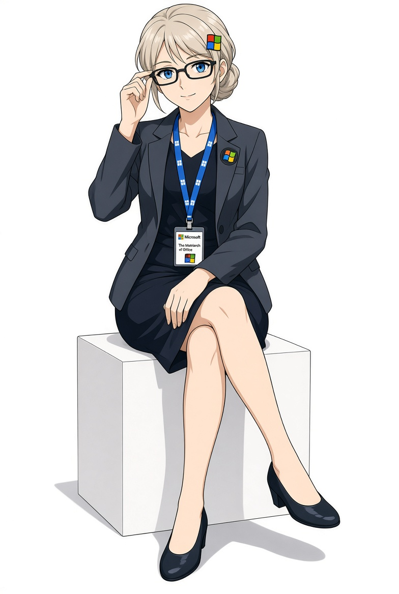
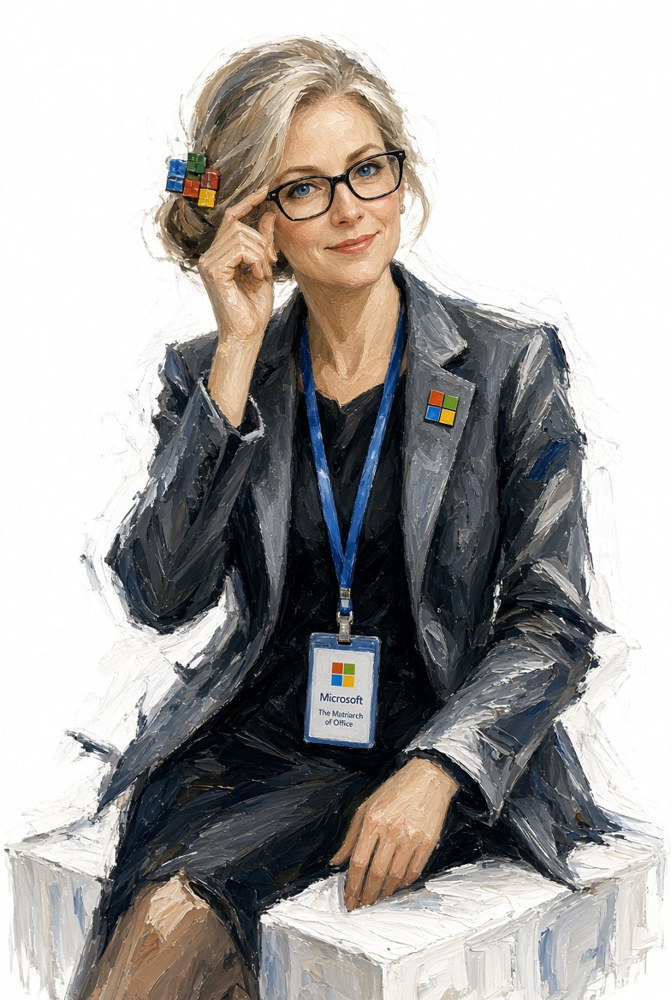
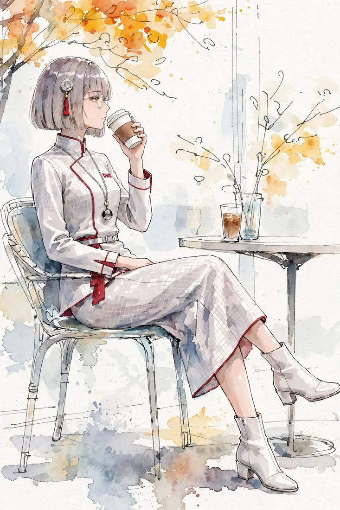
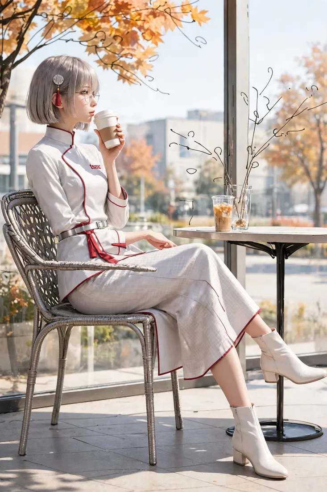
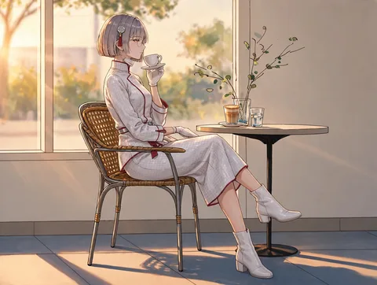
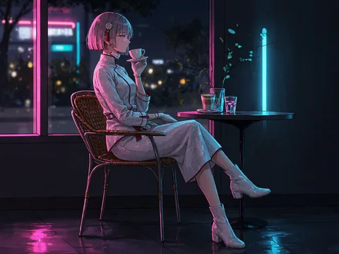
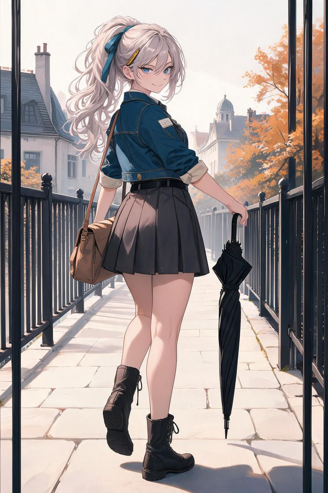
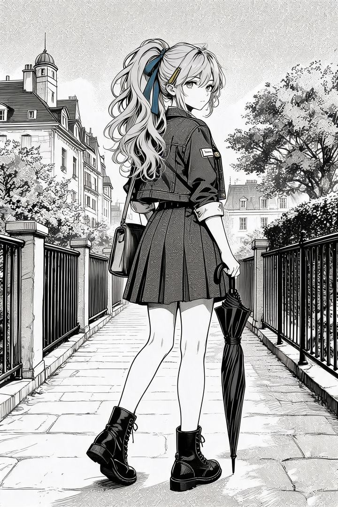
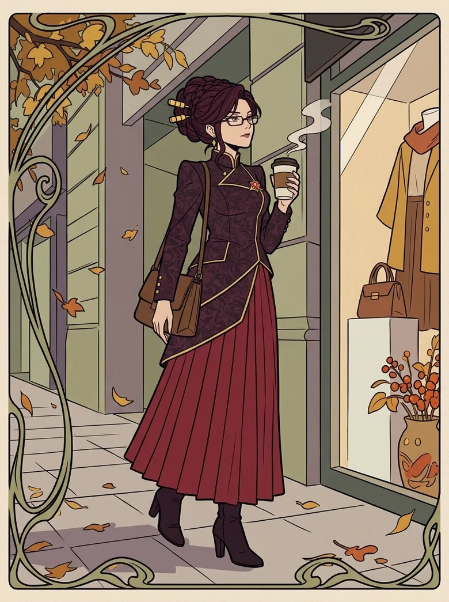
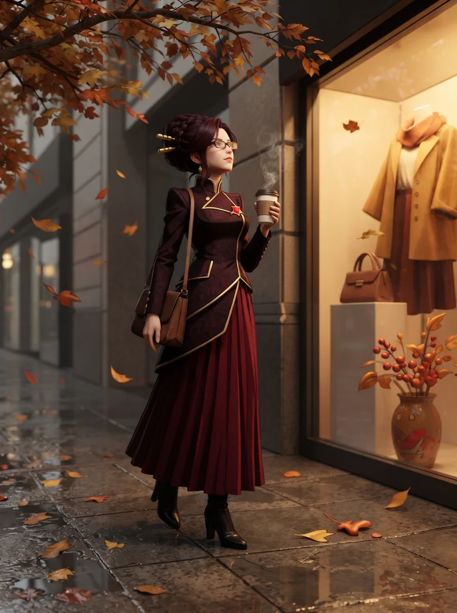

01 / Ensemble illustration
Silicon Wars / Selected works
Illustrations, concept art, and little moments from the world of Silicon Wars.
01 / Ensemble illustration

02 / Key art


03 / Style study


04 / Style course


05 / Seeing course


06 / Style course


07 / Style field guide